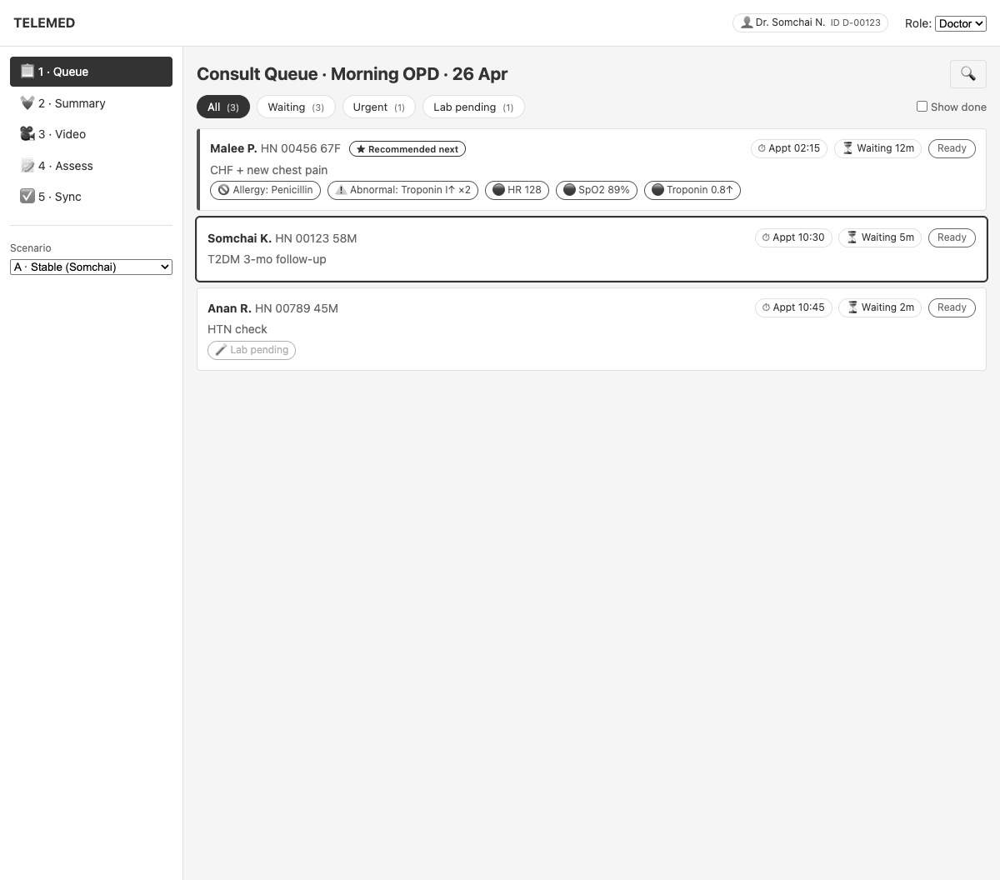
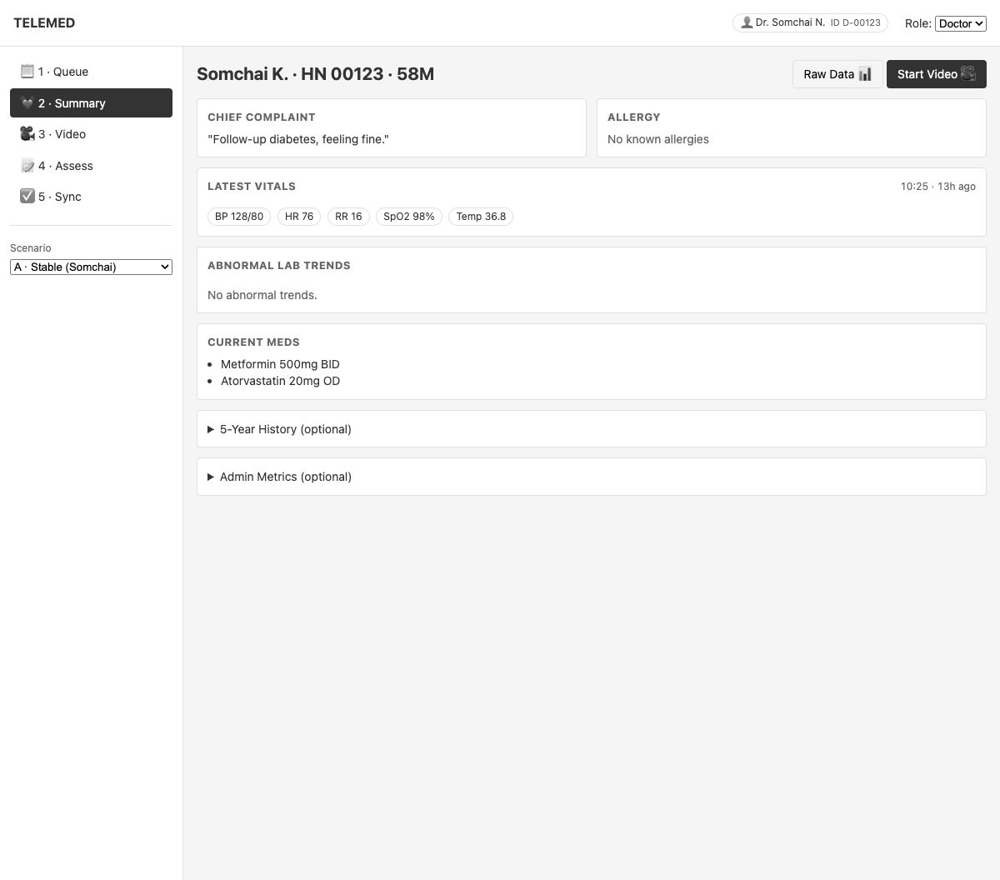
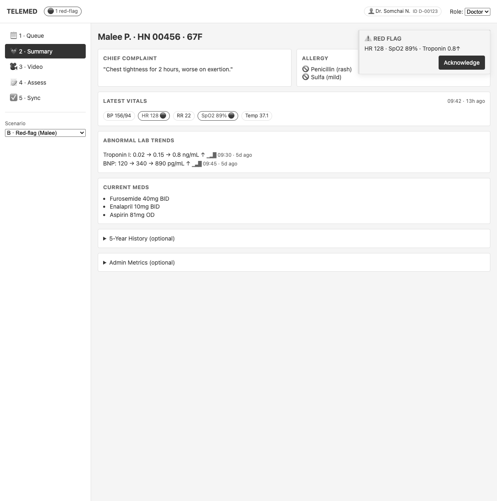
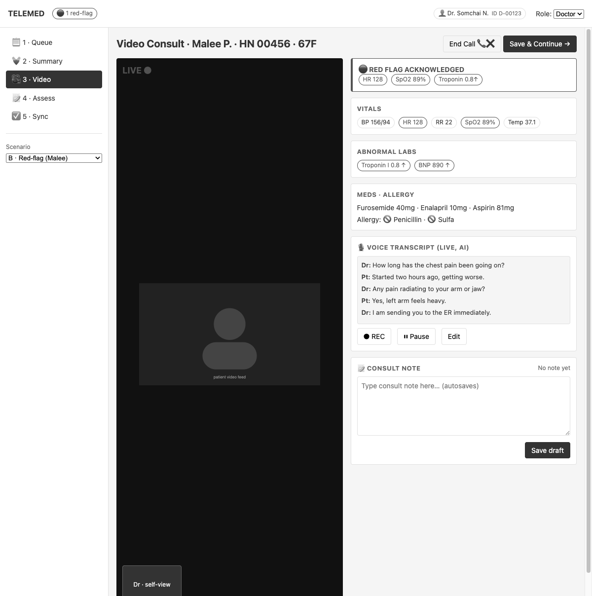
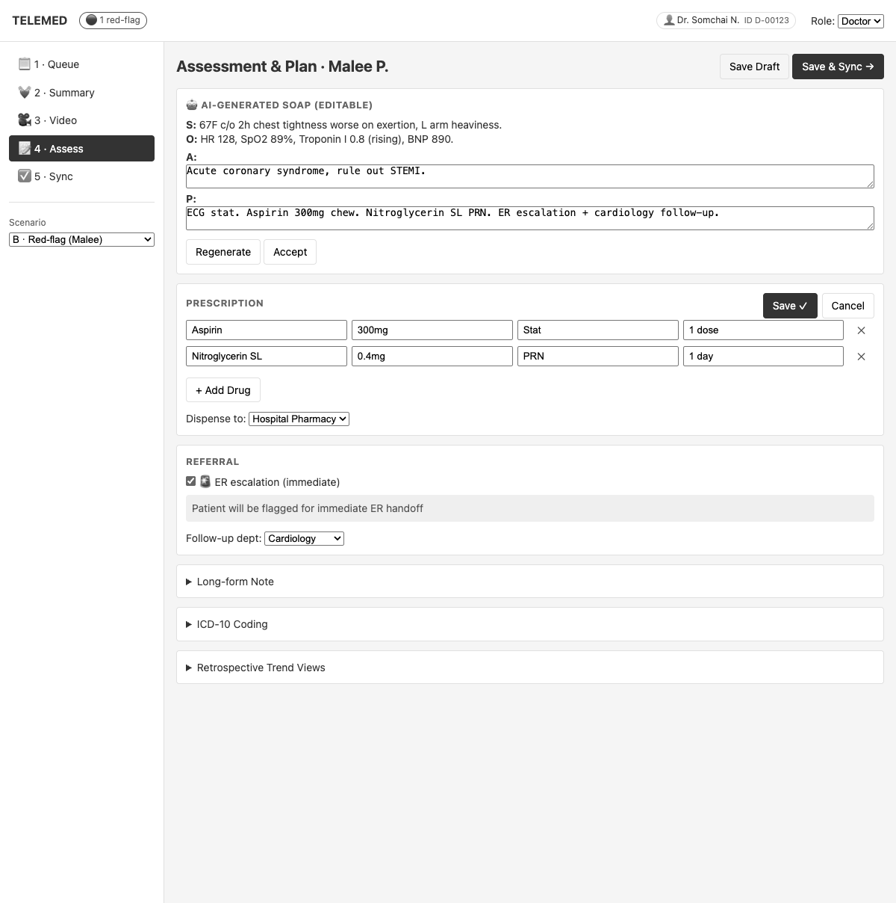
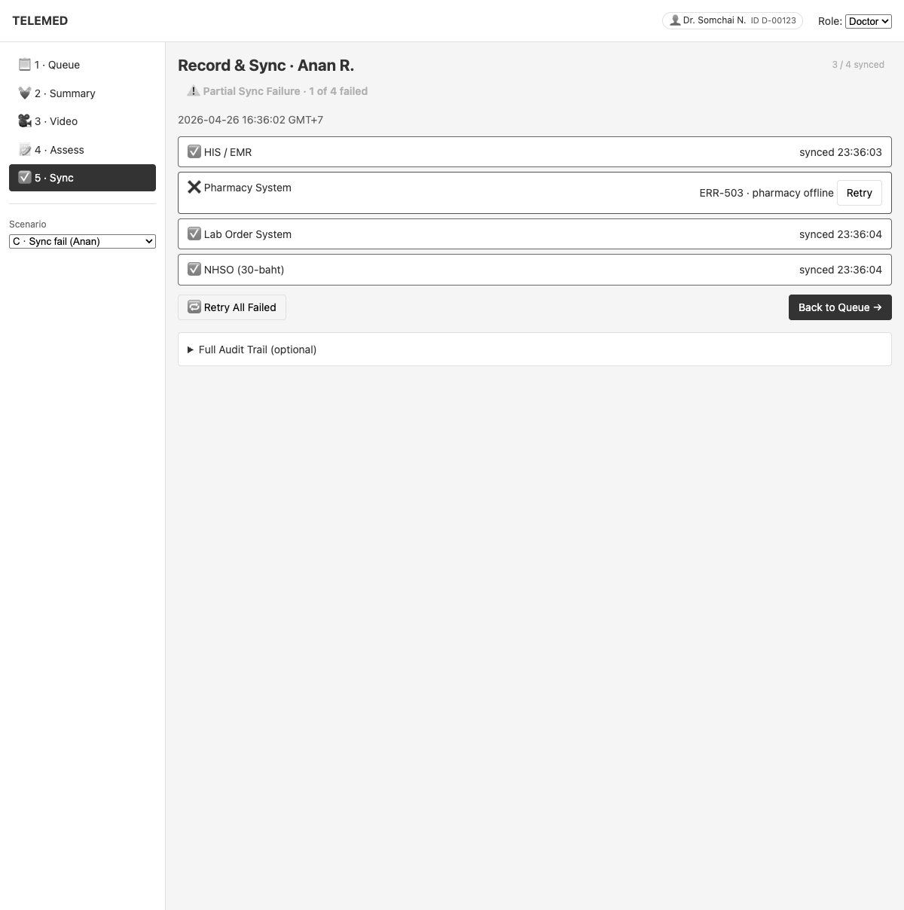
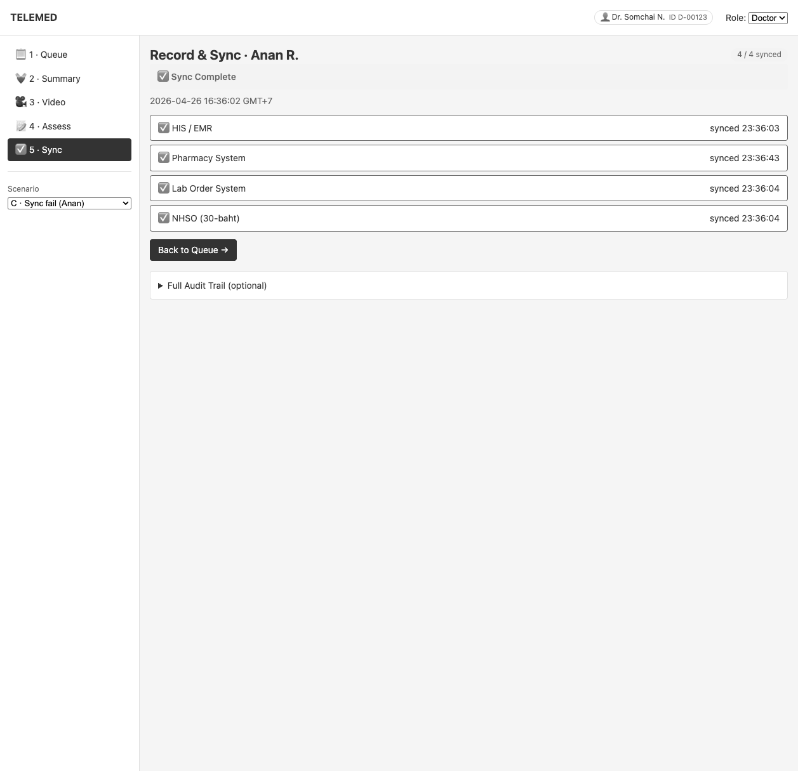
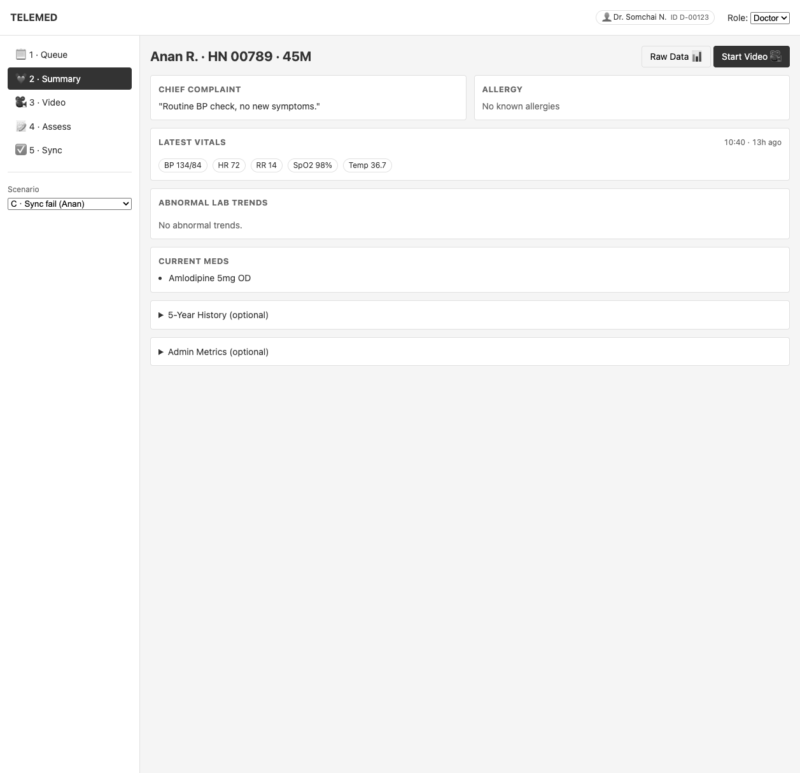
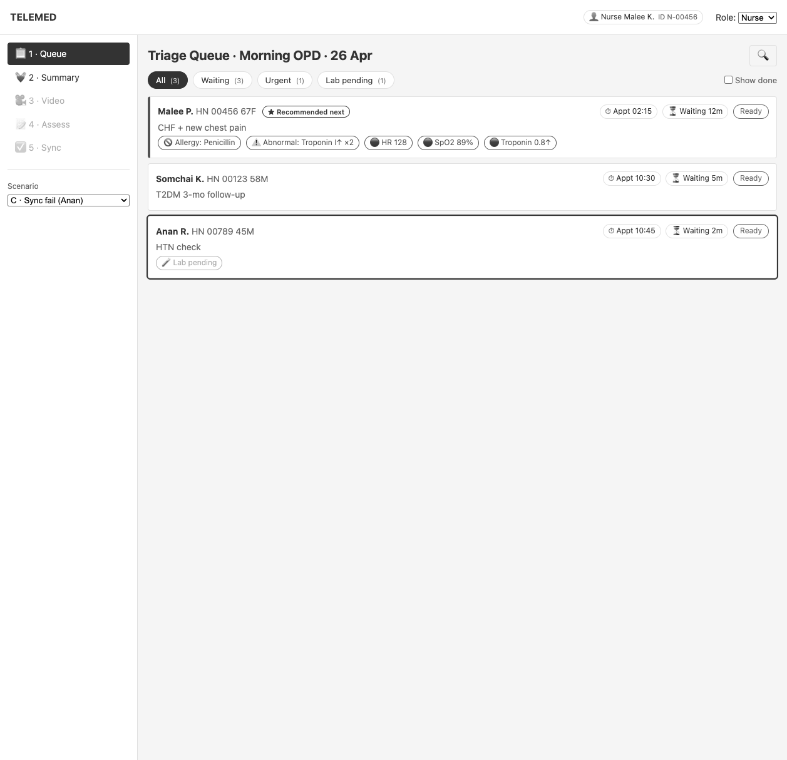

Thai public-hospital telemed consults run on five disconnected systems — video, EMR, lab viewer, e-prescribing, and the NHSO claim system. Tool-switching is where mistakes are born.
Consulting physician. 30+ telemed consults per shift. Needs everything for a single patient on one surface, plus obvious confirmation that the chart, Rx, and claim actually landed.
Triage / pre-consult. Reviews queue, captures vitals, flags red cases. Does not prescribe or sign off. Needs a guarded view that prevents her from accidentally entering doctor-only flows.
Out of scope: patient-facing app, billing clerks, pharmacist UI.
We don't need a new EMR. We need one screen per phase of the consult, and every cross-system handoff — every red flag, every Rx change, every NHSO push — has to be visible the moment it happens and still visible on the next screen if the doctor moves on.
Every error has an inline action. No dead-ends.
Queue → Summary → Video → Assessment → Sync. Roles enforced in the chrome (sidebar disables doctor-only screens for nurses, auto-bounces on switch). Color is reserved for production — the prototype is grayscale-locked so reviewers focus on hierarchy and flow.

| Step | Start | Main action | Decision | Completion |
|---|---|---|---|---|
| 1 | Queue | Pick patient | Red flag? Lab pending? | Row outline = active |
| 2 | Summary | Read vitals/labs/meds | Acknowledge red flag | "Start Video" enabled |
| 3 | Video | Run consult, autosave note | Red band visible | "Save & Continue →" |
| 4 | Assessment | Edit Rx, set referral | ER yes/no, interactions | "Save & Sync →" |
| 5 | Sync | Watch each system | Failure? Retry inline | Cross-screen toast on Summary |
Click Somchai K. — vitals normal, all 4 sync slots green, big bar "✅ Sync Complete".

Switch scenario B — modal red-flag toast appears immediately. HR 128 · SpO2 89% · Troponin 0.8↑. Must Acknowledge before moving on. Assessment opens with ER pre-checked, dept = Cardiology.



Switch scenario C, jump to Sync. Pharmacy fails with ERR-503 · pharmacy offline. Big bar flips to "⚠️ Partial Sync Failure · 1 of 4 failed". Click 🔁 Retry All Failed. Pharmacy goes "retrying…" → green. Bar flips to "✅ Sync Complete". Nav back to Summary — sync-success toast surfaces, one-shot, scenario-scoped.



Switch role to Nurse — identity chip swaps, doctor-only screens (Video, Assess, Sync) greyed out. Nav-clicks are blocked at JS + CSS level. Auto-bounce to Queue if currently on a doctor-only screen.

DESIGN_DEBT_LOG.md, not hidden. AA-oriented; full certification is a production milestone.localStorage stopped mid-consult reload from breaking the demo.| Deliverable | File |
|---|---|
| A · Design system snapshot | docs/DESIGN_SYSTEM.md |
| B · Accessibility checklist | docs/ACCESSIBILITY_CHECKLIST.md |
| C · Design debt log | docs/DESIGN_DEBT_LOG.md |
| Project charter | docs/PROJECT_CHARTER.md |
| Pitch script | docs/PRESENTATION_NARRATIVE.md |
| Technical spec | TECHNICAL.md |
| Live prototype | bliztripper.github.io/telemed-wireframe |